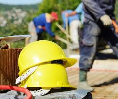

MÀ D'OBRA
Mà d'Obra i Costos de Reformes i Reparacions

Costos de Mà d'Obra i Materials en Reformes
Les reformes i reparacions de l’institut impliquen un important cost anual, amb una gran part de les despeses destinades a la mà d'obra i una menor part als materials. Els costos estan directament relacionats amb la necessitat de mantenir les instal·lacions en bon estat de funcionament, així com amb la realització de reparacions urgents.
Cost de Mà d'Obra:
Representa el 89,7% de la despesa total en obres i reparacions.
Import total de la mà d'obra: 3.344,60 €
Cost de Materials:
Representa el 10,3% de la despesa total en obres i reparacions.
Import total de materials: 381,97 €
Cost Total en Obres i Reparacions:
Total de costos: 3.726,57 €